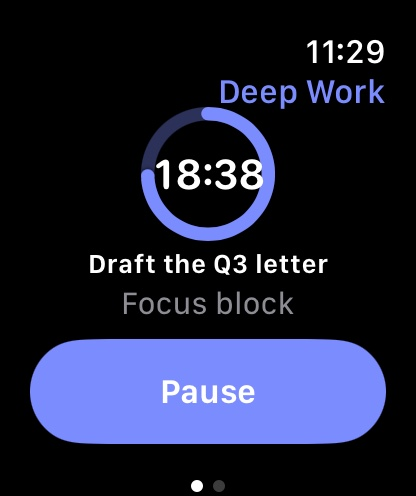
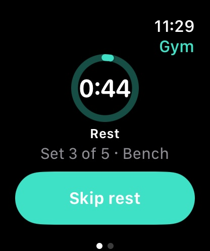
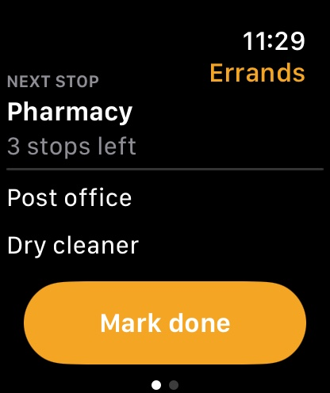
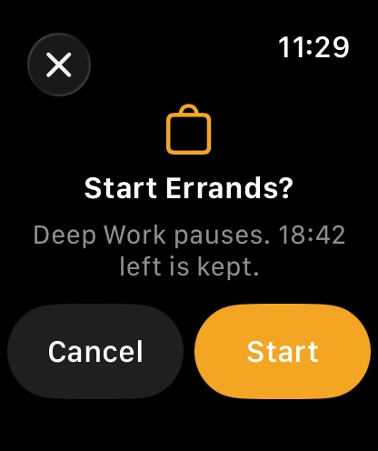
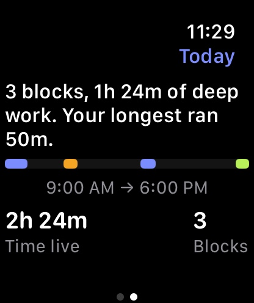

Scenes
One thing at a time. iPhone and Apple Watch, 26.5 or later.
Turn habits to behavior.
Scenes puts the habit on the Lock Screen, rings when it is time, and starts it before you unlock. Every habit needs a setting. Yours is in your pocket.


One habit runs at a time. Whichever it is rides the Lock Screen, the Dynamic Island and Control Center, so the phone and you agree.
Why this keeps happening
Habits do not fail on day one. They fail on the first day you forget.
Nobody who loses a habit is short of motivation on the day they start. What goes missing is the moment in the middle of a Tuesday when the thing was supposed to begin, and nothing in the day was set up to say so.
"I can start. I can't continue."
Start, get bored, stop, repeat. The problem was never the starting, and it was never willpower either.
One missed day becomes the end
A missed day gets filed as proof rather than as a missed day, and then the whole thing needs a fresh Monday.
The streak turns into the thing you dread
A red X, a guilt spiral, and an app you stop opening. So there are no streaks here. There is nothing in Scenes that can be broken.
A habit needs a cue and a setting. Every other app gives you the cue. Scenes gives you the setting too: it changes what the phone is while you do the thing. The context is not a row in a database. It is the device in your hand.
The problem
You already built this out of four apps.
Focus, a timer, a list app, a workout app. That stack does not share state, so the pieces never agree with each other.
Ticking off "Pharmacy" does nothing
Your list app knows. Your Lock Screen does not, so you unlock the phone to find out what is next.
A rest timer stays in your hand
Starting it does not change a Control Center button, so the phone comes out of your pocket for every set.
Every mode feels like a different phone
Deep work, errands and the gym each have their own app, their own timer and their own idea of what you are doing.
Scenes is one piece of state, drawn everywhere at once. Start it from Control Center, advance it from the Lock Screen, finish it from the Action button. The app never has to be open, and if you have to open it to know what to do next, Scenes has failed.
The rule
One live scene. Never two.
Starting a habit pauses the one before it, so you never get two timers arguing on the Lock Screen. The live scene shows one thing: the next action, and the button that finishes it.
- Switch in one tap from Today, a widget, Control Center or your wrist.
- Nothing is lost when you switch. A paused habit keeps its place and its progress.
- The whole phone follows, and the watch with it. Widgets, StandBy, the Live Activity and every complication redraw together.
The habits
Six ways to be busy, one way to run them.
A block, an end time, one task
The task you are inside sits under the countdown. Pause it, extend it, or finish early, without unlocking.
Stops in order, next one visible
The next unchecked stop rides on the Lock Screen while you walk, with how far it is. Tick it from Control Center, and undo it when your pocket does it for you.
Sets, and rest that runs on the Lock Screen
Movements, set counts and a rest timer that rings on silent, so the phone can stay face down between sets.
One timed thing, plus what Health measured
Distance, steps, energy and heart rate for the time you were out. Only if you say yes to Health, and nothing read from it is stored, synced or exported.
Your own checklist
Name it, list the steps, add a timer if it needs one. School run, shop close, evening reset.
A promise, not a nag
Give a habit a time and it arms one alarm for the next occurrence. Did it already? It stands down. Nothing here is counted, and no one keeps score.
The surfaces
Built for the glance, not the app.
- Lock Screen widgets in every accessory size.
- A Live Activity showing the next action, with a button to advance it.
- An Apple Watch app, with complications and a Smart Stack card. See it below.
- Control Center controls to start a scene or advance the live one.
- Home Screen widgets and StandBy for the desk.
- Siri, Shortcuts and the Action button, to start or advance without looking.
- Alarms with a per-scene sound for the end of a block or a rest set, so it rings on silent.
- A Focus filter, so Apple Focus can switch the scene for you.

Apple Watch
On the arm doing the thing.
Scenes comes with a watch app, in the same download and the same subscription. It shows one current job and one next action, and it can perform that action. On a 46mm screen there is room for nothing else, and nothing else is needed.





The same habit, the same countdown, the same next action. Raise your wrist instead of finding your phone.
- One filled button, always. Pause, Log set, Mark done, Finish. Double Tap performs it without touching the screen, so a set gets logged with one hand.
- Complications and the Smart Stack. Circular, corner, rectangular and inline, all off the same snapshot the widgets use. A running block stays accurate for its full length with no refresh.
- Legible dimmed. On Always On the countdown stays full size and full brightness, which is most of the reason this belongs on a wrist.
- Switching asks first. "Start Errands? Deep Work pauses. 18:42 left is kept." A promise the wrist has to make too, because a row is easy to tap by accident.
- The gym and the walk measure themselves. The watch owns the workout session, so heart rate is real rather than absent. It is read for display only, and never stored, synced or exported.
- No paywall on the watch, no price, no purchase. And no streak, no score and no ring to close. Nothing here can be broken either.
Leave the phone at home for a walk, a run or a meditation. The watch starts those on its own, keeps counting, and tells the phone when it is back in range. Deep Work, Errands and Gym need the phone within Bluetooth range, which is a bag in the same room: they change lists the phone owns, and the phone stays the one source of truth.
The record
Proof it is adding up.
Every live period is kept, so the week can tell you something true: how long you were really in Deep Work, what hour you are sharpest, what interrupted you, and what a month of gym days looks like. Come back after a few days off and it says so, once, and says nothing about the days in between.
Nothing here is a score. No grade, no streak, no adherence percentage, no nagging notification. Just what happened, plus a full JSON export of all of it whenever you want to take it elsewhere.

Privacy
No account. No email. No tracking.
There is no sign-up, because there is no server to sign up to. Your habits live on your iPhone, and with sync turned on they live in your own iCloud account, where we cannot read them.
Nothing is collected
No analytics SDK, no advertising SDK, no crash reporting service, no profile of you anywhere.
Permissions asked late
Notifications after your first block. Location only on your first mapped errand stop, and never "Always". Health only if you open a walk.
Your data leaves when you say
Export everything as JSON from Settings. Delete the app and the local copy goes with it.
Pricing
One price. The whole app.
Scenes is subscription only: no free tier, no scene cap, nothing held back for a higher plan. The 7-day trial is the real thing, because there is only one thing.
Weekly
$1.49
Per week, after the trial.
Monthly
$2.99
Per month, after the trial.
Annual
$19.99
Per year, after the trial. About $1.67 a month.
Prices shown in US dollars; the App Store charges in your local currency. The free trial is granted once per subscription group, so the first plan you take spends it. Subscriptions renew automatically unless auto-renew is turned off at least 24 hours before the period ends, and you can cancel any time in iPhone Settings.
Questions
Before you ask.
Do I need an Apple Watch?
No. Every habit works on the phone alone, and Health is optional. If you do wear one, the watch app is already included and a walk or run shows what the watch measured.
Can Scenes set my Apple Focus or wallpaper?
No app can do that for you, so Scenes does not pretend to. It coaches you through the one-time setup, and its Focus filter lets Focus drive the scene instead.
Does it work if the app is closed?
Yes. Widgets, controls and the Live Activity render from a shared snapshot, so the phone stays right without the app running.
What happens to my data if I cancel?
It stays on your iPhone, and you can export all of it as JSON at any time.
Is there an Apple Watch app?
Yes, and there is nothing extra to buy: it installs with the iPhone app and the one subscription covers both. It needs watchOS 26.5. There is no Mac app.
Can I leave my phone behind?
For a walk, a run or a meditation, yes. The watch starts those by itself and catches the phone up when it is back in range. Deep Work, Errands and Gym need the phone nearby, because they change lists the phone owns.